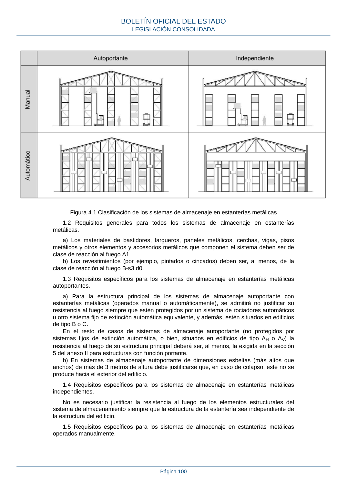

RSCIEI · Página 100 · versión 2025-04-10
SHA256: 85aa0af25d51e5b58d8975a4eefbf76d3f57a8933445cfe814ae9c4818a2e3e7 · página física 100 de 108 · métodos de encabezado
solo si están cotejados.
Documento · ← p. 99 · p. 101 →
Formatos: Markdown · JSON de bloques · PDF p. 100 · imagen PNG
Figura 4.1 Clasificación de los sistemas de almacenaje en estanterías metálicas 1.2 Requisitos generales para todos los sistemas de almacenaje en estanterías metálicas. a) Los materiales de bastidores, largueros, paneles metálicos, cerchas, vigas, pisos metálicos y otros elementos y accesorios metálicos que componen el sistema deben ser de clase de reacción al fuego A1. b) Los revestimientos (por ejemplo, pintados o cincados) deben ser, al menos, de la clase de reacción al fuego B-s3,d0. 1.3 Requisitos específicos para los sistemas de almacenaje en estanterías metálicas autoportantes. a) Para la estructura principal de los sistemas de almacenaje autoportante con estanterías metálicas (operados manual o automáticamente), se admitirá no justificar su resistencia al fuego siempre que estén protegidos por un sistema de rociadores automáticos u otro sistema fijo de extinción automática equivalente, y además, estén situados en edificios de tipo B o C. En el resto de casos de sistemas de almacenaje autoportante (no protegidos por sistemas fijos de extinción automática, o bien, situados en edificios de tipo AH o AV) la resistencia al fuego de su estructura principal deberá ser, al menos, la exigida en la sección 5 del anexo II para estructuras con función portante. b) En sistemas de almacenaje autoportante de dimensiones esbeltas (más altos que anchos) de más de 3 metros de altura debe justificarse que, en caso de colapso, este no se produce hacia el exterior del edificio. 1.4 Requisitos específicos para los sistemas de almacenaje en estanterías metálicas independientes. No es necesario justificar la resistencia al fuego de los elementos estructurales del sistema de almacenamiento siempre que la estructura de la estantería sea independiente de la estructura del edificio. 1.5 Requisitos específicos para los sistemas de almacenaje en estanterías metálicas operados manualmente. BOLETÍN OFICIAL DEL ESTADO LEGISLACIÓN CONSOLIDADA Página 100
